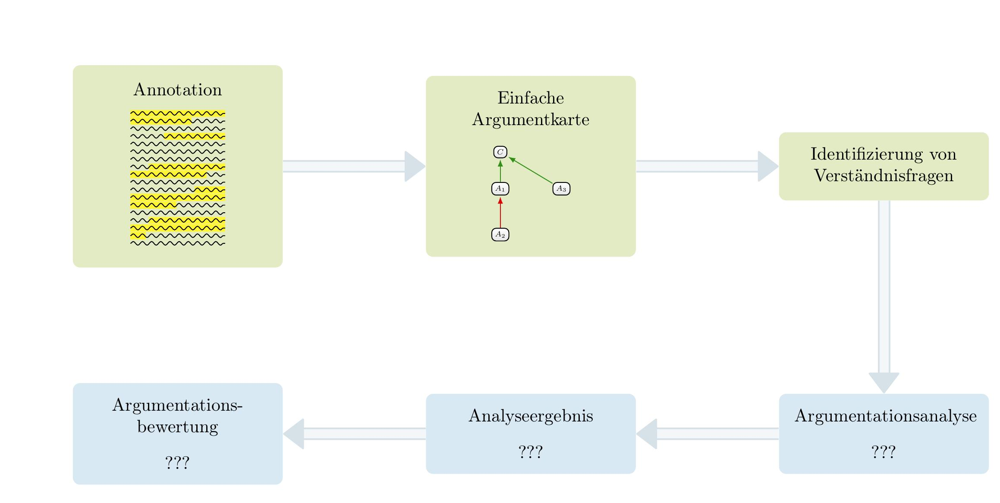

Sitzung 2: Struktur von Argumenten
Institut für Philosophie
2026-10-23
Die wichtigsten Punkte der letzten Sitzung
Die wichtigsten Punkte der letzten Sitzung:
- Die Identifizierung intendierter Begründungsansprüche ist ein zentraler Schritt der Argumentationsanalyse.
- Identifizierte Thesen, Aussagen, Argumenten, Einwände, Entkräftungen etc. können über einfache Argumentkarten visualisiert werden.
- Einfache Argumentkarten bestehen aus zwei Arten von Knoten (Aussagekästen und Argumentkästen) und zwei Arten von Argumentbeziehungen (Angriff und Stützung).
- Argumentanalyse dient der systematischen Beantwortung von Verständnisfragen und einer darauf aufbauenden Evaluation von Argumentation.
Ablauf einer Argumentationsanalyse (bisheriger Stand)

Agenda für heute
- Makrostruktur der Textausschnitts von Hörster
- Struktur und Rekonstruktion von Argumenten
- Gemeinsame Rekonstruktion eines Arguments aus dem Hörstertext
- Die Begründungsbeziehung
1. Makrostruktur der Textausschnitts von Hörster
👉 Siehe Mitschrift zur heutigen Sitzung
2. Struktur und Rekonstruktion von Argumenten
Was sind Argumente?
Allgemeine Beschreibung von Argumenten
Ein Argument ist eine Menge von Sätzen, derart, dass ein Teil der Sätze (die Prämissen) mit dem Anspruch formuliert werden, einen anderen Teil zu begründen (die Konklusion).
Standardform: Prämissen-Konklusion-Struktur
(1) Erste Prämisse...
(2) Zweite Prämisse...
(3) ...
----
(4) *Also*: KonklusionEin einfaches Beispiel
Elvira ist eine begabte Philosophin. Sie wird daher eine gute Arbeitsstelle finden, weil alle begabten Philosoph:innen eine gute Arbeitsstelle finden werden.
Ein einfaches Beispiel
Elvira ist eine begabte Philosophin. Sie wird daher eine gute Arbeitsstelle finden, weil alle begabten Philosoph:innen eine gute Arbeitsstelle finden werden.
(1) Elvira ist eine begabte Philosophin.
(2) Alle begabten Philosoph:innen werden eine gute Arbeitsstelle finden.
----
(3) *Also:* Elvira wird eine gute Arbeitsstelle finden.Rekonstruktion von Argumenten als “Verstehensmethode”
Rekonstruktion von Argumenten
Überführung umgangssprachlich formulierter Argumente in eine Standarddarstellung (so dass bestimmte Rekonstruktionsprinzipien erfüllt sind).
👉 Ein Argument versteht man nur dann (hinreichend), wenn man das Argument rekonstruieren kann.
Argumente mit Unterargumenten/Zwischenkonklusionen
Zwischenkonklusionen und Unterargumente
Eine Aussage, die in einem Argument sowohl begründet wird als auch selbst als Begründung angeführt wird, heißt Zwischenkonklusion. Aussagen des Arguments, die eine Zwischenkonklusion begründen, bilden mit ihr zusammen ein Unterargument.
Schematisch:
(1) 1. Prämisse.
-- begründet durch (1) --
(2) Zwischenkonklusion.
(3) 2. Prämisse.
-- begründet durch 2 & 3 --
(4) Konklusion.Argument mit Unterargumenten/Zwischenkonklusionen
oder auch komplexer:
(1) 1. Prämisse.
(2) 2. Prämisse.
-- begründet durch 1 & 2 --
(3) 1. Zwischenkonklusion.
(4) 3. Prämisse.
(5) 4. Prämisse.
-- begründet durch 4 & 5 --
(6) 2. Zwischenkonklusion.
-- begründet durch 3 & 6 --
(7) Konklusion.Argument mit Unterargumenten/Zwischenkonklusionen: Buchführung
oder auch komplexer:
(1) 1. Prämisse.
(2) 2. Prämisse.
-- begründet durch 1 & 2 --
(3) 1. Zwischenkonklusion.
(4) 3. Prämisse.
(5) 4. Prämisse.
-- begründet durch 4 & 5 --
(6) 2. Zwischenkonklusion.
-- begründet durch 3 & 6 --
(7) Konklusion.Buchführung
Machen sie in der Rekonstruktion von Argumenten deutlich, welche Sätze für die Begründung welcher anderen Sätze angeführt werden!
3. Gemeinsame Rekonstruktion eines Arguments aus dem Hörstertext
👉 Siehe Mitschrift zur heutigen Sitzung
4. Die Begründungsbeziehung
Begründungsansprüche
Allgemeine Beschreibung von Argumenten
Ein Argument ist eine Menge von Sätzen, derart, dass ein Teil der Sätze (die Prämissen) mit dem Anspruch formuliert werden, einen anderen Teil zu begründen (die Konklusion).
👉 Ziel der Argumentationsanalyse ist es, sich Klarheit darüber zu verschaffen, ob und wie diese Begründungsansprüche eingelöst werden.
🤔 Frage: Wann begründen denn nun aber die Prämissen die Konklusion?
Begründungsbeziehung
Begründet bzw. rechtfertigt jemand eine Konklusion mit Hilfe von Prämissen, wird i.A. zweierlei behauptet:
- Die Prämissen sind wahr/plausibel.
- Die Prämissen stehen in einer rechtfertigenden Beziehung zur Konklusion.
Wie sich herausstellt, kann man diese Fragen trennen:
- D.h. ein Argument kann wahre/plausible Prämissen besitzen, ohne dass die Prämissen in einer rechtfertigenden Beziehung zueinander stehen und umgekehrt kann ein Argument falsche/unplausible Prämissen besitzen, die in einer rechtfertigenden Beziehungen zur Konklusion stehen.
Begründungsbeziehung
Ein Beispiel:
(1) Potsdam liegt östlich von Berlin.
(2) Berlin liegt östlich von Hannover.
-- aus 1,2 --
(3) Also: Potsdam liegt östlich von Hannover.Ein weiteres Beispiel:
(1) Der Mond rotiert gebunden um die Erde.
-- aus 1 --
(2) Also: Berlin ist die Hauptstadt von DL.Wie steht es in diesen Beispielen um die Begründungsbeziehung und die Plausibilität der Prämissen?
Begründungsbeziehung: Deduktive Gültigkeit
Eine Möglichkeit der Präzisierung der ‘rechtfertigenden Beziehung’:
Deduktiv gültige Argumente
Argumente sind deduktiv gültig genau dann, wenn gilt: Sind die Prämissen wahr, kann die Konklusion nicht falsch sein. (Oder: Die Wahrheit der Prämissen, garantiert die Wahrheit der Konklusion. Oder: Die Konklusion folgt logisch aus den Prämissen.)
- Für Argumente mit Zwischenkonklusion(en) wird entsprechend verlangt, dass jeder Schluss im Argument deduktiv gültig ist.
Begründungsrelationen - Deduktive Gültigkeit
- Deduktive Gültigkeit wird sichergestellt durch die Bedeutung der benutzten Begriffe.
- Deduktive Gültigkeit ist allerdings nicht die einzige mögliche Begründungsrelation zwischen Prämissen und Konklusion. (induktiv starke Argumente)
- Ob ein Argument deduktiv gültig ist, ist z.T. unabhängig von der Frage, ob die Prämissen und die Konklusion wahr sind.
- D.h. man kann die Frage nach der Wahrheit & Plausibilität der Prämissen von der Frage der ded. Gültigkeit des Arguments trennen.
Begriff der Schlüssigkeit
Schlüssige Argumente
Argumente sind schlüssig genau dann, wenn gilt: Die Prämissen des Argument sind wahr und das Argument ist deduktiv gültig.
Nachweis deduktiver Gültigkeit
Deduktive Gültigkeit: Wenn die Prämissen wahr sind, kann die Konklusion nicht falsch sein.
🤔 Woher wissen wir, ob ein Argument deduktiv gültig ist?
Schlussschemata und Schlussmuster
<Kontra-Argument des Theodizee Problems>: Weil es Übel gibt, existiert Gott nicht.
(1) Wenn es Übel in der Welt gibt, dann gibt es keinen allmächtigen und
allgütigen Gott gibt.
(2) Es gibt Übel in der Welt.
----
(3) *Also:* Es gibt keinen allmächtigen und allgütigen Gott.🤔 Deduktiv gültig?
Schlussschemata und Schlussmuster
Was passiert, wenn wir bestimmte Bestandteile austauschen?
Schlussschemata und Schlussmuster
<Kontra-Argument des Theodizee Problems>: Weil es Übel gibt, existiert Gott nicht.
(1) Wenn es Übel in der Welt gibt, **dann sind die Strassen nass.**
(2) Es gibt Übel in der Welt.
----
(3) *Also:* **dann sind die Strassen nass.**Ist immer noch deduktiv gültig!
Schlussschemata und Schlussmuster
(1) Wenn **es regent**, dann
sind die Strassen nass.
(2) **Es regnet**.
-- aus 1,2 --
(3) *Also*: Die Strassen sind nass.Immer noch deduktiv gültig!
Schlussschemata und Schlussmuster
Schematisch:
(1) Wenn p, dann sind die Strassen nass.
(2) p.
-- aus 1,2 --
(3) *Also*: Die Strassen sind nass.Schlussschemata und Schlussmuster
Schematisch:
(1) Wenn p, dann q.
(2) p.
-- aus 1,2 --
(3) *Also*: q.Jede Einsetzung dieses Schemas mit Aussagesätzen ergibt einen deduktiv gültigen Schluss.
Modus ponens
<Argumentschema Modus Ponens>
(1) Wenn p, dann q.
(2) p.
-- mit Modus Ponens aus 1,2 --
(3) *Also*: q.Jede Einsetzung dieses Schemas mit Aussagesätzen ergibt einen deduktiv gültigen Schluss.
- Das entsprechende Schlussmuster heißt modus ponens.
Abschluss
Zusammenfassung
Die wichtigsten Punkte der heutigen Sitzung:
- Rekonstruktion von Argumenten: Überführung umgangssprachlich formulierter Argumente in eine Standarddarstellung so dass Prämissen, Zwischenkonlusion und die Konklusion sowie die Schlüsse explizit gemacht werden.
- Definition der deduktiven Gültigkeit: Argumente sind deduktiv gültig genau dann, wenn gilt: Sind die Prämissen wahr, kann die Konklusion nicht falsch sein.
- Nachweis deduktiver Gültigkeit: Die deduktive Gültigkeit eines Arguments kann man nachweisen, indem man zeigt, dass das Argument ein deduktiv gültiges Argumentschema instanziiert.
Fahrplan für die kommenden Sitzungen
- Welche weiteren Schlussmuster gibt es?
- Wie kann man feststellen, ob in einem bestimmten Argument eines dieser Schlussmuster verwendet wird?
- Welche Argumente sollte als deduktiv gültig rekonstruiert werden (und welche nicht)?